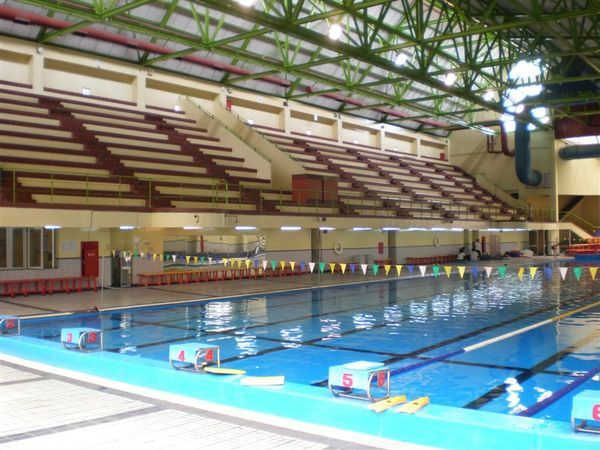

資源介紹
綜合球場
本館主球場40M×60M，可容納三座藍球場，正式比賽時則改為一座球場及800人之觀眾席。另副球場一座，以排球及非正式之網球練習為主
健身房
設計以明亮的黃色及藍色做為背景色，有許多設施供師生使用
室內游泳池

中原大學在其體育館側，興建一奧運標準之室內游泳池，池內有水道8條長50M，提供游泳教學及正式比賽之用。外牆R.C、屋頂鋼構，造型配搭先已建成之體育館。在設計上乾濕動線嚴格劃分，觀眾自門廳直接引導至二層看台，可容納觀眾400～600席，看台架高與體育館二樓以天橋相連，看台下方作為更衣、浴廁、管理及機電之用。
室外場
在其體育館旁，擁有排籃球場與網球場以及溜冰場，再往前走擁有操場等設施，供給給教職員及學生或校外人士使用。